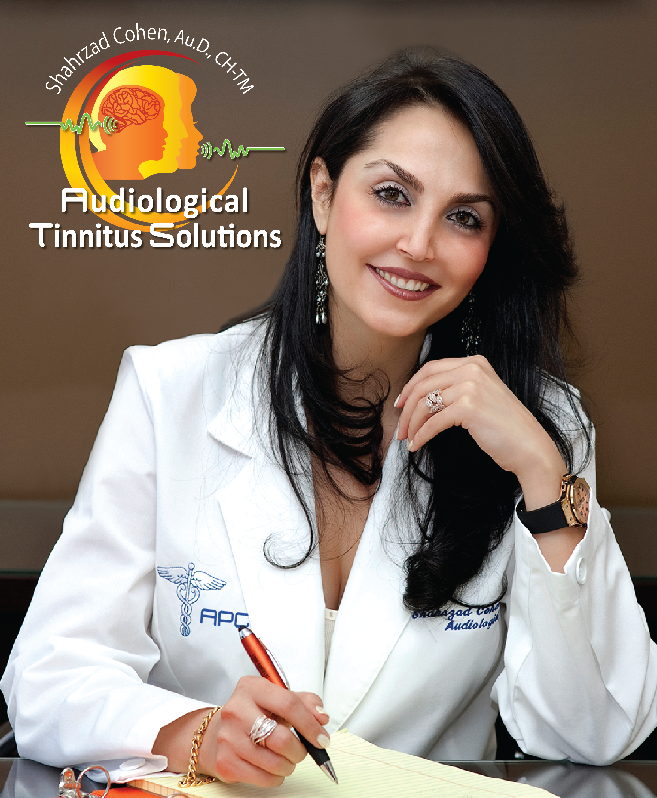
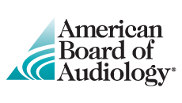
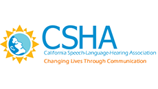
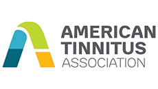
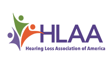
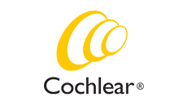
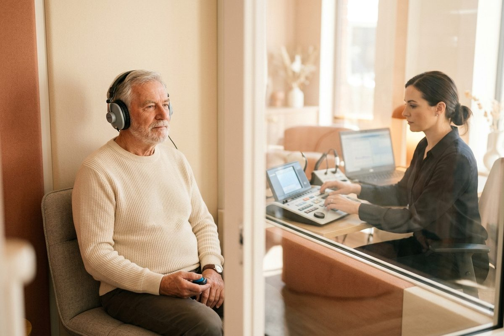

Team
Shahrzad Cohen, Au.D., CH-TM, CBIS
Doctor of Audiology. Certified in Tinnitus Management. Certified Brain Injury Specialist.
Tailored Solutions for your Tinnitus and Hearing Problems.

A Clinician Who Listens.
Founder, Hearing Loss Solutions and Audiological Tinnitus Solutions.
A practicing audiologist since 2001, Dr. Shahrzad Cohen opened her Sherman Oaks office in 2014 and has guided thousands of patients through hearing loss, tinnitus, sound sensitivity, and the auditory effects of concussion and traumatic brain injury.
Her approach is concierge by design. Appointments are unhurried, every recommendation comes with a clear rationale, and patients always leave with a plan they understand.
Board Certifications
- Doctor of Audiology (Au.D.), University of Florida
- Board Certified, American Board of Audiology (ABA), 2013–present
- Board Certificate Holder in Tinnitus Management (CH-TM), 2017–present
- Certified Brain Injury Specialist (CBIS)
- Certified Provider, Cochlear Americas, 2015–present
- Certified Provider, The Listening Program (TLP), 2014–present
- Certified Gold Provider, Sensaphonics, 2018–present
- Designated Lenire Tinnitus Treatment Provider
- Telehealth credentialed across California
- Speaks Farsi, Spanish, and English; ASL by appointment
Clinical Interests
- Tinnitus assessment and treatment, including Lenire, Levo, and Neuromonics
- Hyperacusis and sound sensitivity
- Auditory rehabilitation after concussion or traumatic brain injury
- Hearing conservation for musicians, first responders, and shooters
- Extended-wear and prescription hearing aid fitting with real-ear measurement
Credentials Most Local Practices Do Not Hold.
Education
- M.S., Communication Disorders – Audiology, California State University, Northridge, 2001
- Clinical Fellowship in private ENT and Otology centers
- Doctor of Audiology (Au.D.), University of Florida
Professional Memberships
- Fellow, American Academy of Audiology (AAA), since 2001
- Fellow, Academy of Doctors of Audiology (ADA), since 2013
- Fellow, Academy of Educational Audiologists (AEA), since 2016
- Fellow, California Academy of Audiology (CAA), since 2012
- Fellow, California Speech & Hearing Association (CSHA) — Advisory Board, District 7 (Continuing Education Officer)
- Professional Member, American Tinnitus Association (ATA), since 2016
- Professional Member, Hearing Loss Association of America (HLAA)
- Gold Member, Sensaphonics Musician Program, since 2018
Honors & Awards
- Marquis Who's Who, 2025 Honored Listee
- American Academy of Audiology “Academy Scholar,” 2014–2018
- Persian Society Leadership Award, 2016
- Cum Laude, 1999
Accredited by the Field's Leading Bodies.






Personalized Approach
No two patients hear the same way or live the same life, so no two care plans look the same. Dr. Cohen starts every relationship with a conversation, not a checklist, and builds a plan around your hearing history, your goals, and the moments that matter most to you.
Expertise and Experience
A practicing audiologist since 2001, Dr. Cohen holds credentials most local practices do not, including Certified Tinnitus Management and Certified Brain Injury Specialist status, and is a designated Lenire treatment provider. That depth of training means fewer referrals out and more answers in the room with you.
Integrated Hearing Care from a Team Who Knows You.
Great hearing care depends on more than one clinician. Our patients also work with a licensed therapist, so the emotional side of hearing loss is supported alongside the clinical side.
Dr. Sharona Cohen, Psy.D., MFT
Licensed Marriage and Family Therapist
A state-licensed Marriage and Family Therapist and a fellow of the AMA, Dr. Sharona Cohen earned her degree from the University of Southern California and a Doctorate in Psychology. She works alongside Dr. Cohen on the emotional side of hearing loss and tinnitus, family communication, and the anxiety and depression that hearing change can bring. In-house therapy support is rare in audiology, and our patients benefit from that partnership.
Testimonials
Tailored Solutions for your Tinnitus and Hearing Problems, in the words of the patients who have lived it.
"Dr. Cohen is one of the kindest, most understanding and most proactive health professionals I've ever worked with… She has helped me believe there's a way to get things not just to a manageable level, but perhaps even to eliminate [my tinnitus] entirely. I've already seen significant improvement."
Rachel R.
"I read an article in AARP magazine about the LEVO treatment… after researching further, Dr. Cohen's name came up as a local audiologist using this system. She was personable, professional and most importantly knowledgeable. My really loud days already seem less. 5 stars for Dr. Cohen."
Mike M.
"After fitting me with good hearing aids, she explained that hearing aids are only part of good hearing… so she worked with me on a program to train my brain. Thanks to her, my hearing is as good as when I was a teenager."
Don S.
"During his first visit with Dr. Cohen, she was able to help my father hear much better… It was a moving moment and my father even teared up, as he was able to hear for the first time in years. We highly recommend her without any reservations!"
Sophia K.
"Over the last 10 years we have worked with a variety of audiologists… Dr. Cohen's care, attention to detail, and fund of knowledge in combination with her bedside manner has taken my daughter's care to a new level."
Richard B., M.D.
"Lovely visit… great people… very polite… they listen to you. On a scale of one to ten they get a 10. Had my ears waxed and can hear again! Highly recommended."
Louis L.
We Look Forward to Serving You.
Meet Dr. Cohen in Person.
Schedule a consultation at our Sherman Oaks office or by telehealth.
Contact Us